IL PARCO NAZIONALE DEL POLLINO
| 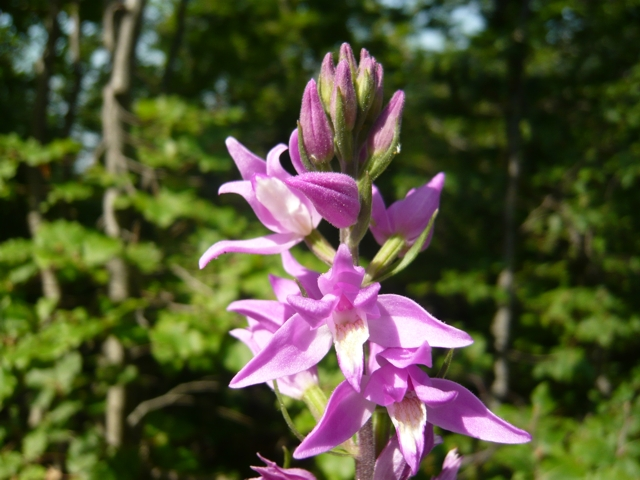 |
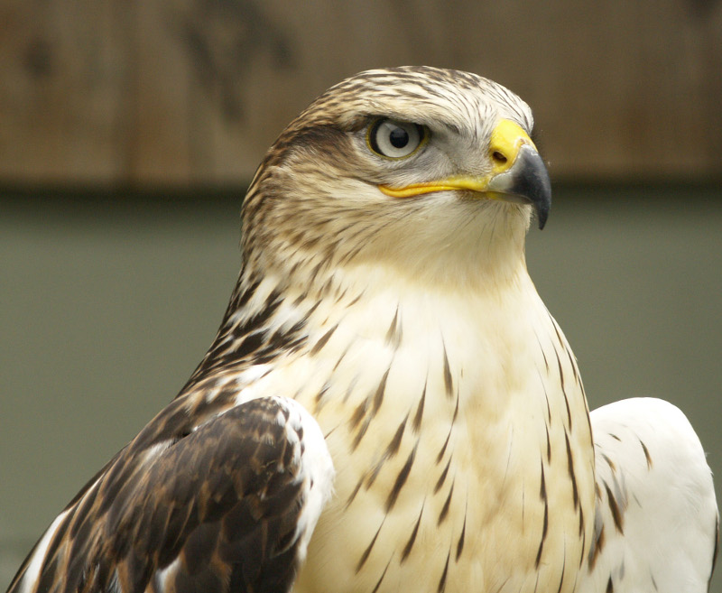 |
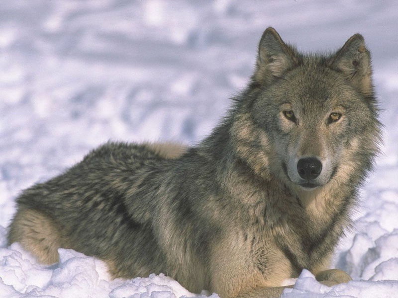 |
| Orchidea |
Falco
lanario |
Lupo
appenninico |
Il Parco nazionale del Pollino è situato sul Massiccio del Pollino ed è il parco naturale più grande d'Italia. È stato istituito nel 1988. Nel parco è presente la vetta più alta dell'Italia meridionale, la Serra Dolcedorme (2.267 metri), situata nel Massiccio del Pollino. In passato gli animali che abitano il parco esistevano in tante altre zone montuose, ma in seguito alla caccia e alla modifica del territorio da parte dell'uomo, il Parco ne permise la conservazione. Vi sono molti uccelli, come il picchio nero, il corvo imperiale e rapaci come l'aquila reale, il gufo reale, il falco pellegrino e lanario e il grifone (una specie di avvoltoio). Fra i mammiferi sono presenti il lupo appenninico, il gatto selvatico, la lontra, lo scoiattolo meridionale, il capriolo e il cervo. Anche la flora è ricca. Vi sono alberi maestosi come l'abete bianco, il faggio, l'acero e il Pino loricato, rarissimo. Sono presenti anche piante più piccole, come orchidee, genziane, il raro giglio rosso, lamponi, fragoline di bosco e piante aromatiche come la menta, la lavanda e il timo. Il turismo è sviluppato. Si praticano l'alpinismo, il rafting, lo sci di fondo, la speleologia e la mountain bike.
| 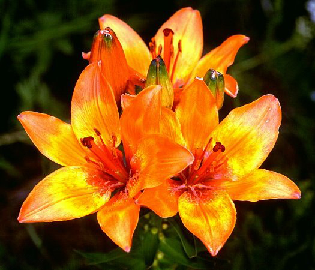 |
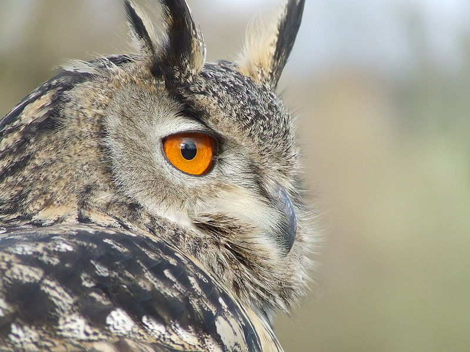 |
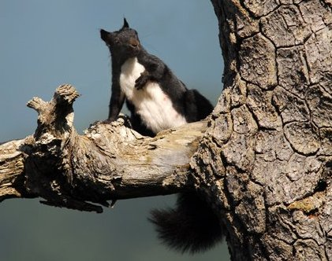 |
| Giglio
rosso |
Gufo
reale |
Scoiattolo
meridionale |
| 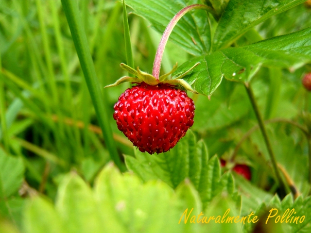 |
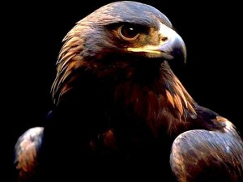 |
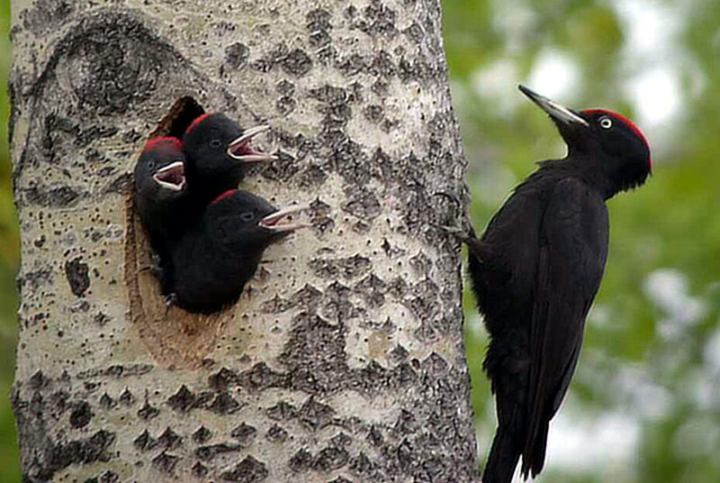 |
| Fragolina
di bosco |
Aquila
reale |
Picchio
nero |
| 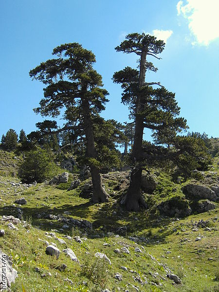 |
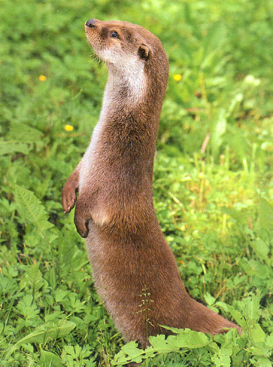 |
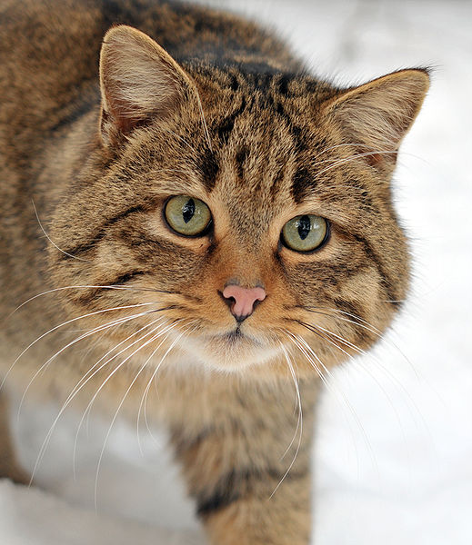 |
| Pino
loricato |
Lontra |
Gatto selvatico |
Home Territorio Popolazione Attività economiche Specialità Personaggi Storia